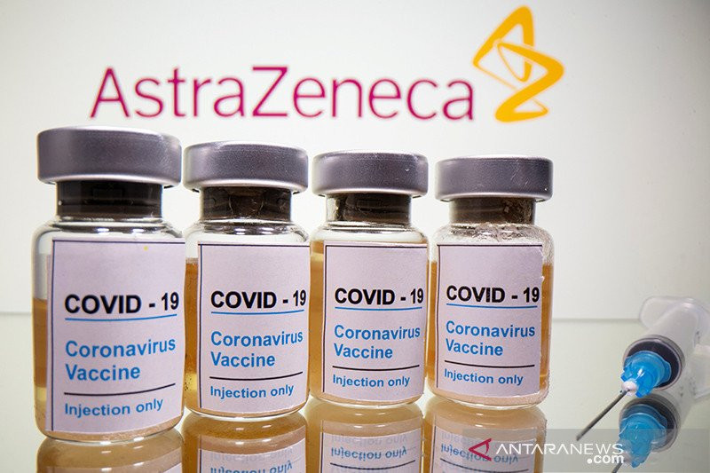
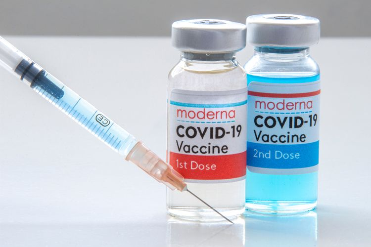
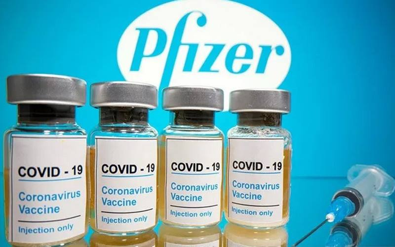
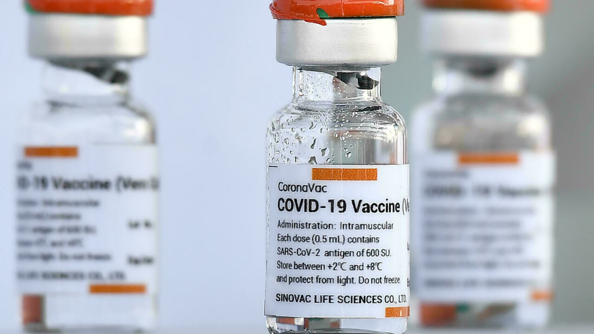

The types of COVID-19 vaccines used in Indonesia are those produced by PT Bio Farma, Oxford-AstraZeneca, Sinopharm, Moderna, Novavax, Pfizer-BioNTech, and Sinovac.
1. Oxford-AstraZeneca

The Oxford-AstraZeneca COVID-19 vaccine is a recombinant adenoviral vector vaccine. Quoted from Very Well Health, recombinant vaccines use a small portion of the genetic material of a pathogen, such as SARS-CoV-2, to trigger an immune response.
Certain parts of the virus can be targeted and these vaccines are generally safe to use in large populations of people even those with chronic health problems or people with impaired immunity.
One disadvantage of recombinant adenoviral vector vaccine is that booster injections may be required from time to time.
2. China National Pharmaceutical Group Corporation (Sinopharm)
Sinopharm’s type of COVID-19 vaccine utilizes the Corona virus that has been turned off or often referred to as the inactivated vaccine. This vaccine is claimed to be the first in the world to show excellent immunogenicity and safety.
Quoted from the New York Times, Sinopharm’s type of COVID-19 vaccine works by teaching the immune system to make antibodies against the SARS-CoV-2 coronavirus. Antibodies attach to viral proteins, as so-called spike proteins attach to their surface.
After being vaccinated with the Sinopharm COVID-19 vaccine, the immune system can respond to a live Corona virus infection. One type of immune cell, namely B cells, produces antibodies that attach to invaders. Antibodies that target the spike protein can prevent the virus from entering cells.
3. Moderna

Moderna’s type of COVID-19 vaccine uses messenger RNA (mRNA). The coronavirus has a spike-like structure on its surface called the S protein. The COVID-19 mRNA vaccine gives cells instructions on how to make the harmless part of the S protein.
After vaccination, cells begin to make protein fragments and display them on the cell surface. The immune system will recognize that the protein is not there and begin to build an immune response and make antibodies.
4. Pfizer-BioNTech

Pfizer-BioNTech’s COVID-19 vaccine is called BNT162b2 and is based on messenger RNA (mRNA) technology. This vaccine uses a synthetic gene that is easier to create, so it can be produced faster than conventional technology.
This dormant virus does not cause illness but teaches the immune system to respond to resistance. With mRNA, the body is not injected with dead or weakened viruses, but the genetic code of the virus is injected. As a result, the body will produce proteins that stimulate an immune response.
The CDC says Pfizer-BioNTech’s type of COVID-19 vaccine is recommended for people 16 years of age and older. Just like the Moderna COVID-19 vaccine, the CDC also provides a number of criteria for people who are not advised to receive the same Pfizer vaccine as the Moderna vaccine.
5. Sinovac

Sinovac’s type of COVID-19 vaccine works to strengthen the immune system so that antibodies can fight the Corona virus. This vaccine is made using an inactivated virus platform or method.
In this way, the body can learn to recognize the virus that causes COVID-19, SARS-COV-2, without having to face the risk of serious infection. The vaccine is given in two doses or requires two injections.
6. Novavax
Novavax is a biotechnology company based in Maryland, United States that is taking a traditional approach to developing a vaccine against COVID-19. The Novavax vaccine uses a specially made spike protein that mimics the natural spike protein in the Corona virus.
Quoted from Very Well Health, this vaccine works by inserting a protein that triggers an antibody response, which blocks the ability of future coronaviruses to bind to cells and prevent infection. The protein is combined with the Matrix-M Novavax adjuvant, which is important in enhancing the immune response evoked by the protein antigen.
Like other COVID-19 vaccine candidates, the Novavax vaccine has been tested on adults 18 years of age and older. The company has yet to provide updates on trials in children and adolescents. Information regarding concerns for specific groups has not been provided, but this information is expected to be revealed through late-stage clinical trials.
7. PT Bio Farma
The type of COVID-19 vaccine produced by PT. Bio Farma is one type of Corona virus vaccine that will be used in Indonesia. In its development, PT. Bio Farma has received a certificate stating that its production facilities are suitable for producing COVID-19 vaccines.
This Certificate of Good Manufacturing Practice (CPOB) or Good Manufacturing Practice (GMP) was officially given by the Food and Drug Supervisory Agency (Badan POM) to Bio Farma.
“We got the CPOB certification from the POM Agency, thus Bio Farma is very feasible to produce the COVID-19 vaccine, which the Indonesian people have been waiting for,” explained Bio Farma President Director Honesti Basyir in a written statement, Wednesday (12/30/2020).
In addition to production, Bio Farma has also prepared an integrated digital distribution system to ensure quality assurance of the vaccines that will be given to the people of Indonesia.